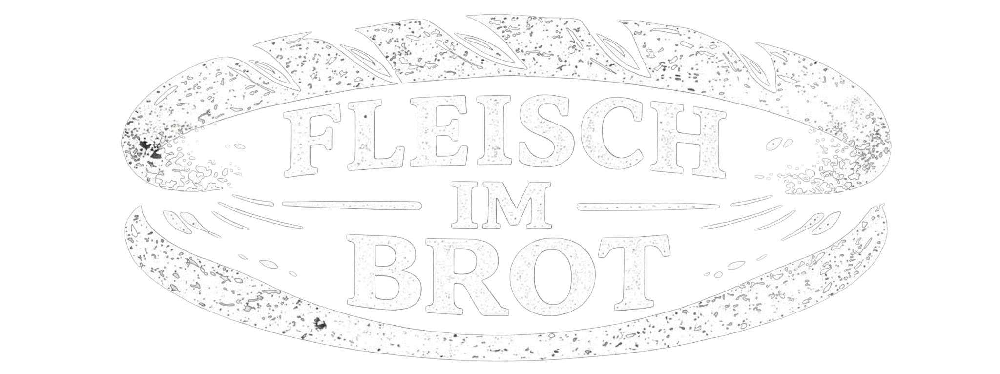
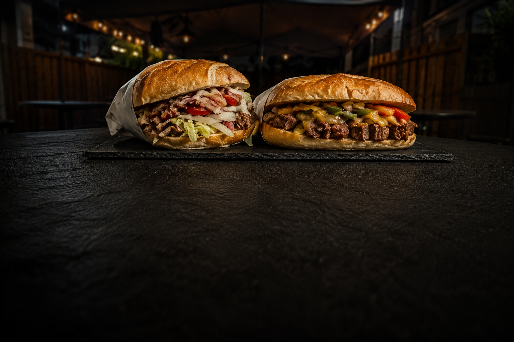

Kavurma (PNK’s Original)
dish-kavurma.jpg
Der Star
Kavurma (PNK’s Original)
9,00 €
Saftiges, geschmortes Rindfleisch mit Salat und Soßen nach Wahl.


Ekmek Arası · Frisches Fleisch im Brot · Düren
100% Rindfleisch · Halal
Unser Prinzip
Seit 2026 auf der Theke
9,00 €
Saftiges, geschmortes Rindfleisch mit Salat und Soßen nach Wahl.
12,90 €
12 Stunden mariniertes Rindfleisch Cağ-Kebab-Style im Brot mit Salat und Soße nach Wahl.
12,00 €
Geschmortes Rindfleisch mit geschmorten Zwiebeln und Paprika, Cheddar-Käse, Jalapeños.
7,50 €
Mariniertes Hähnchenfilet, gegrillt im Brot mit Salat und Soße nach Wahl.
8,00 €
Gegrillte Köfte im Brot mit Salat und Soße nach Wahl.
6,50 €
Gegrilltes Sucuk im Brot mit Salat und Soße nach Wahl.
Unsere Soßen – beliebig kombinierbar:
Was Gäste sagen
Besuch uns
Distelrather Str. 3
52351 Düren
| Montag | 11:00–21:00 |
| Dienstag | 11:00–21:00 |
| Mittwoch | 11:00–21:00 |
| Donnerstag | 11:00–21:00 |
| Freitag | geschlossen |
| Samstag | 12:00–19:30 |
| Sonntag | geschlossen |